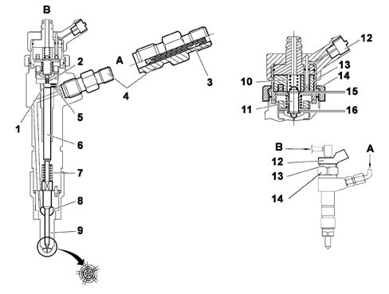
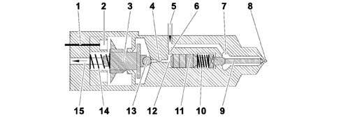

INJECTOR
- Path
- Descriptions > 10 ENGINE > 1060 DIESEL INJECTION SYSTEM > 1060F INJECTORS AND PIPES > INJECTOR
- Kind
- system description
- Applies to
- engines: 2.0 16V JTD, 2.2 16V JTD; all production periods
- Interactive page
- https://sloeber94.github.io/elrnDB-fUlss/en/#/179006608
Applies to: engines: 2.0 16V JTD, 2.2 16V JTD; all production periods
CONSTRUCTION SPECIFICATIONS
The injector for the system is the electromagnetically controlled type, divided into two parts:
- control solenoid consisting of coil and pilot valve ;
- actuator/atomizer, composed of a pressure rod, atomizer pin and jet with 5 openings with a high pressure supply (up to 1350 bar).
The solenoid valve coil is fastened to the injector body by a nut that also keeps the pilot valves in place.
Diagrammatic view of the injector

A, Fuel supply (at high pressure)
B, Fuel return to the tank (at low pressure),
1, Control volume (10 mm³) | 9, Injector needle |
2, Injector opening nozzle | 10, Main spring |
3, Filter | 11, Pilot needle and ball shutter |
4, Inlet connector | 12, Electrical connection |
5, Resupply nozzle | 13, Solenoid |
6, Pressure rod | 14, Closing nut |
7, Injector spring | 15, Pilot needle operating clearance |
8, Pressure chamber | 16, Pilot needle operating clearance |
OPERATION
The injection cycle stages are described below in chronological order.
Diagrammatic view of the injector in rest position

1, Electrical connection | 9, Atomizer pin |
2, Coil | 10, Return spring |
3, Pilot needle | 11, Pressure rod |
4, Injector opening calibrated nozzle | 12, Control volume |
5, Fuel supply (at high pressure) | 13, Ball plunger |
6, Calibrated fuel supply nozzle | 14, Main spring |
7, Pressure chamber | 15, Fuel return (at low pressure) |
8, Nozzle |
Stage 1: Engine switched off
The fuel in the common rail and in the high pressure pipes is at atmospheric pressure or at the pre-supply pressure (3.5 bar max) if the electric fuel pump is working.
The injector solenoid valve is in the rest position; the ball shutter (13) closes the return duct.
The atomizer pin (9) is pressed into its housing by the return spring (10): the nozzle (8) is closed.
Stage 2: Engine running
The pilot needle (3), pressed by the main spring (14) closes the return duct through the ball shutter (13).
The fuel at high pressure (from the common rail) fills the control volume (12), via the connector (5) and, passing through the calibrated nozzle (6), the pressure chamber (7). In these circumstances the pressure is the same in both chambers because the return duct is closed.
The atomizer pin (9), pressed by the return spring (10) and the high pressure applied to the pressure rod (11), keeps the nozzle (8) closed.
Stage 3: Start of injection / the solenoid valve opens
When the NCM supplies the solenoid valve coil (2), the mangetic force produced causes the lifting of the pilot needle (3) and the ball shutter, raised by the high pressure, opens the return duct to the tank.
The pressure in the control volume (12) decreases compared with that in the pressure chamber (7) through the two calibrated jets (4) and (6).
The force acting on the pressure rod (11) decreases and the high pressure (from the common rail) in the pressure chamber (7) causes the raising of the atomizer pin (9).
At this point the injector is open through the effect of the fuel pressure which, on the injector side, arrives at around 160 bar.
The injection lasts as long as the coil (2) remains supplied.
Special features:
The opening speed of the injector needle depends on the difference in the flow rate between the two calibrated jets (4) and (6).
Since the quantity of return fuel from the pressure rod (11) added to that passing through the calibrated jet (6) should flow to the calibrated jet (4), to allow the opening of the injector, the flow rate for the latter should be greater than that for the jet (6).
The solenoid valve opens completely for each control impulse (even for the minimum flow rate).
The injector opening depends on the length of the command:
- short impulse: pressure rod (11) has a certain inertia, atomizer pin (9) slightly raised.
The surface area where the fuel passes through the jet ports (8) is very small and the injection pressure is equal to the pressure in the common rail (decreased by a significant load loss).
- long impulse: pressure rod (11) and atomizer pin (9) fully raised. The surface area is extensive and fuel is atomized at the common rail pressure (decreased by a lower load loss than previously).
The flow rate injected is determined by:
- the solenoid valve energizing time;
- the opening and closing speed of the atomizer pin (9);
- the lifing of the atomizer pin (9);
- the injector hydraulic output (diameter of atomizer ports and number);
the pressure in the common rail.
The energizing time and the pressure in the common rail can be selected at will, whilst the other parameters are set by the manufacturer.
A compromise must therefore be found between:
- injector rapid opening and closing - good results in terms of emissions;
- slow injector opening and closing - for small injection flow rates (pre-injection).
Stage 4: End of injection / the solenoid valve closes
The NCM interrupts the supply for the solenoid valve coil (2). The main spring (14) compresses the pilot needle (3) and the ball shutter (13) in its housing. Since the communication with the tank return is closed, the common rail pressure is re-established in the control volume (12). The pressure of the fuel on the pressure rod (13), added to the force of the return spring (10), causes the atomizer pin (9) to close.
IMA CLASSIFICATION
During the test stage the injectors are checked with the specifications verified in different pressure/flow rate conditions. All the injectors that do not meet a certain standard are rejected; the remaining ones are classified using a 9 character alphanumerical code, known as an IMA code, imprinted by laser on the top part of the magnet.
Injector replacement
During fitting on the vehicle the NCM should memorize the individual code and, if one or more injectors is replaced in a service situation the alteration to the code should be made during the diagnosis using the appropriate equipment.
Programming the NCM
The NCM injection software and maps are updated using the diagnostic equipment (the NCM has a flash EPROM).
FUEL COOLING
The high pressure in the injection circuit causes the fuel to become very hot.
To prevent this problem a heat exchanger is fitted comprising a metal coil on the return pipe that cools the fuel upstream of the tank through a heat exchange with the ambient air.